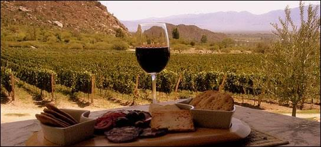
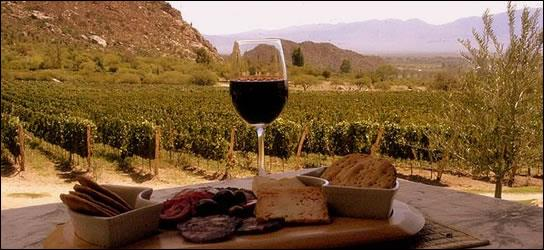

La Rioja, oficialmente Ciudad de Todos los Santos de la Nueva Rioja, es
la ciudad capital de la Provincia de La Rioja en Argentina. Se encuentra
ubicada al centroeste de la provincia, en el departamento Capital, cabecera
de La Rioja.
La ciudad cuenta con una gran variedad de atractivos turisticos de todo tipo
desde propuestas al aire libre como actividades deportivas y/o artisticas.
 
